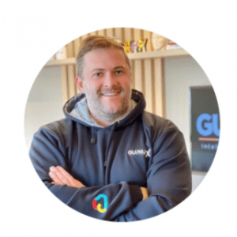

Olá, pessoal! Gostaria de compartilhar com vocês uma história de transformação que ocorreu lá em 2003 na criação da Guinux.
Naquela época, percebi que era necessário repensar todo o ambiente tecnológico, principalmente em pequenas e médias empresas, com o objetivo de melhorar a experiência de suporte aos usuários. No início dos anos 2000 a área de TI era frequentemente vista como um setor complexo e de difícil acesso, onde problemas eram tratados de forma reativa, e a insatisfação era frequente.
A primeira etapa dessa transformação foi simplificar ambientes de TI complexos, padronizar tecnologias que poderiam ser usadas para clientes de todos os tamanhos, e buscar soluções inovadoras e parcerias estratégicas como o Google Cloud para criar um ambiente propício para inovação e o Bitdefender para garantir a segurança.
Na Guinux passamos a investir em soluções inovadoras, como automação de processos, análise de dados, sistemas de atendimento avançados e integração de ferramentas que permitiram não apenas aumentar a eficiência operacional do nosso time, mas também a tomada de decisões estratégicas.
Ao longo dos anos, a transformação que iniciamos em 2003 trouxe resultados significativos. A experiência do usuário foi aprimorada, com suporte ágil e personalizado e hoje somos reconhecidos por nossos clientes, como uma experiência inovadora de Help Desk, Gestão de TI e inovação com Google Workspace.
Essa jornada não foi fácil, exigiu esforço, comprometimento e muita resiliência.
Hoje, temos um modelo de TI que coloca o usuário em primeiro lugar, oferecendo suporte de alta qualidade, garantia na segurança dos dados e utilização de tecnologias visando o aumento de produtividade e faturamento dos nossos clientes.
Ao focar na experiência do usuário, simplificar processos, garantir a segurança dos dados e utilizar a tecnologia de forma estratégica, vários clientes alcançaram resultados extraordinários, esse é o nosso principal objetivo como parceiros de TI.
Confira os testemunhos dos nossos clientes no Linkedin
Quero agradecer a todos os nossos clientes que fizeram e fazem parte dessa incrível jornada e é claro ao nosso Time que faz tudo isso acontecer !
Guilherme Straioto
CEO | Head
